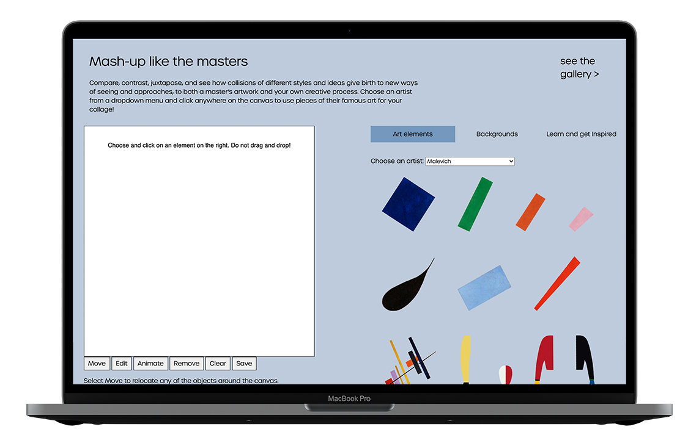
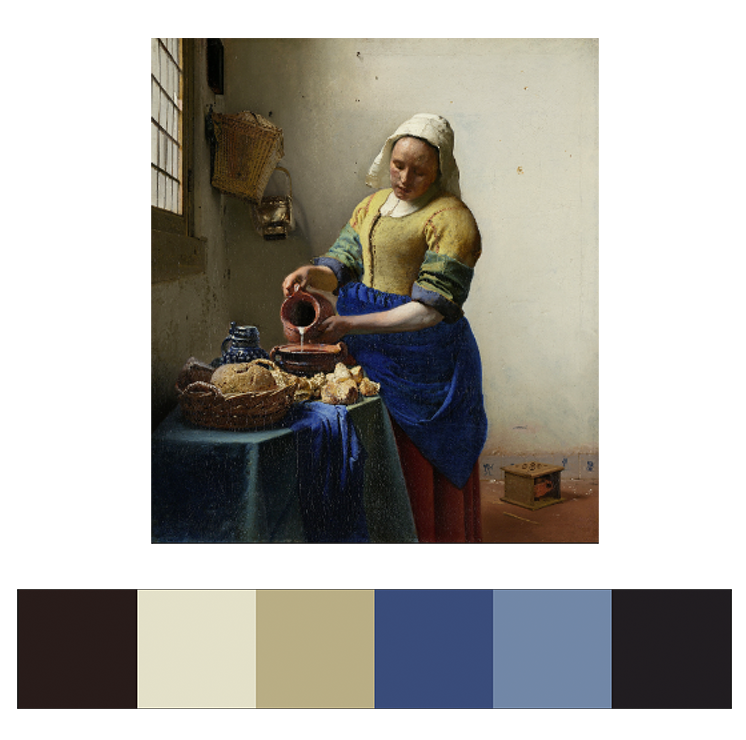
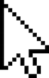

<caseStudy id="museumStudies mediaStudies jQuery" date="march2020-may2021"/>
see live or read
full text >
documentation
For my Senior Honors thesis, I worked with professors Finn Brunton and Marita Sturken to conduct a year-long media theory research about what it means for a museum collection to be moved into the space of a web browser. I examined design processes, technologies and curatorial decisions behind virtual museum experiences such as Masterpieces Up Close by the Rijksemuseum and The Museum of the World by the British Museum to analyze how digital media affordances can be efficiently used to recontextualize exhibits and engage visitors in new ways.
As the result, I wrote a 50-page manuscript that received an Oustanding Honors Thesis Award from the department. Following my own thesis findings – that museums need to explicitly reinvent their material for a hyperlinked, juxtaposed space of the web – I coded my final presentation to be an interactive page that mimics an aesthetic of a gallery space but presents the material in an interactive, augmented manner.
For more details, watch my full presentation of the topic:
Similar projects

mash up like the masters
a collage-making interface that explores 20th-century art through unexpected comparisons and contrasts learn more >


rijksmuseum artist inspirations
an API-based inspiration search tool for creators that extracts color palettes of the Rijksmuseum's most famous masterpieces learn more >